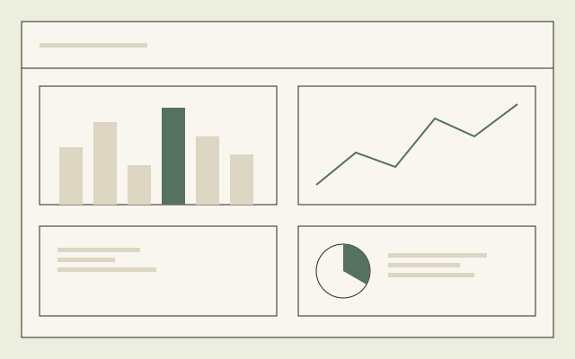

Case
Centrus Insights
Pre-clinical study data, made visual.
Project
Instem
Product Designer
6 months
Product Design
Preview

Overview
The brief
Pre-clinical studies bury the signal in huge tables. Insights turns them into charts scientists can reason with.
The hard part was trust. Every chart traces back to its data, reads clearly to experts and newcomers, and is honest about uncertainty.
The challenge
What was in the way
A pre-clinical study can generate thousands of rows of data, and the people who need to reason about it were reading that data as a table:
- Patterns that would jump out in a chart stayed buried in rows of numbers, so early signals were found late, or not at all.
- A chart is only useful if the person reading it trusts it, and a data platform aimed at scientists cannot afford a visualisation that misleads, even by omission.
- The audience ranged from specialists who knew the data intimately to newcomers who did not, and one chart had to serve both without dumbing down for either.
The approach
How we got there
-
Start from the question, not the data
Every chart began with the question a scientist was actually trying to answer, worked backwards into the right visual form, not forwards from whatever the data happened to contain.
-
Traceability as a design constraint
Every chart links back to the study it came from, so a scientist can move from the pattern to the underlying evidence without leaving the page.
-
Design the uncertainty in, not out
Where the data was incomplete or provisional, the chart says so. A confident-looking chart built on shaky data is worse than no chart.
-
Test with people who know more than you do
Draft charts went in front of the toxicologists and data scientists who would use them daily, and any reading they found ambiguous was reworked before it shipped.
The outcome
What shipped
A set of chart types that hold up under a specialist’s scrutiny and still make sense to someone seeing the study for the first time.
Centrus Insights is live and used to reason about real pre-clinical data. Instem’s client confidentiality means I can write about the approach and the constraints, but not show the interface itself or publish outcome figures. What follows from that is a case study about judgement, not a gallery of charts.
Next
Get in touch